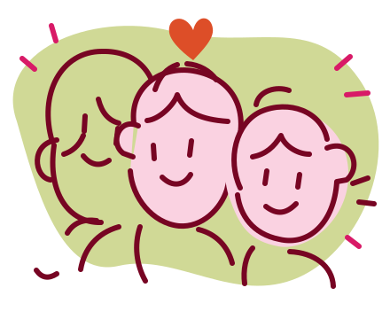

MUSEUM EXPERIENCE FINDER · KÖLN
Was bewegt euch?✳

Allein neugierig. Zu zweit verbunden. Gemeinsam verspielt.
Findet die Erlebnisse, die zu euch passen.
02 / AUF ENTDECKUNG
Erdgeschoss / 0
Antippen & entdecken ↗
↑ Orientierung nach eurer SkizzeKonzeptplan · nicht maßstabsgetreu
● Solo-freundlich♥ Zu zweit♣ Gruppen Erlebniszone▤ Treppe↥ Eingang▣ Tickets♧ GarderobeWC Toilette
Verbindungen entdecken.
Auf eure Weise.
Ein unabhängiges Designprojekt von Studierenden der KISD, TH Köln. Wir untersuchen, wie ein interaktiver Grundriss den ersten Museumsbesuch erleichtert. Layout und Stationen basieren auf einer konzeptionellen Besuchsskizze. Namen, Interessen und Zuordnungen sind vorläufige Projektangaben, keine offiziellen Museumskategorien.